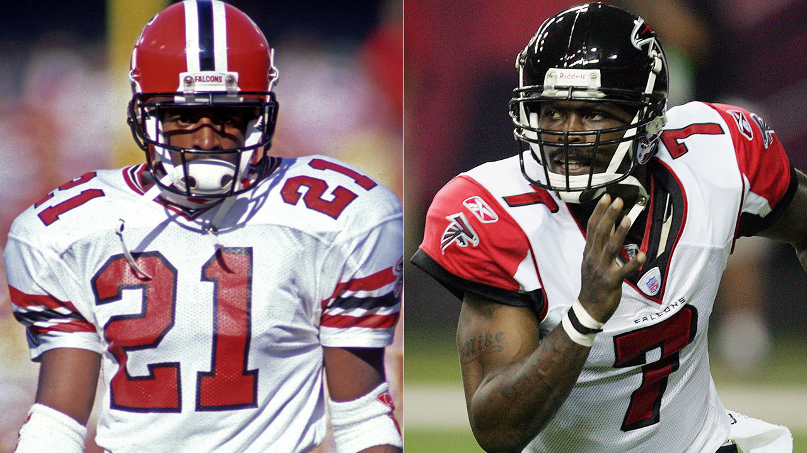

After not playing in 1996, Sanders had one-year stints with the Reds in
1997 and 2001 before retiring from baseball. ... The 19 non-offensive
touchdowns (combining kickoff, punt, interception, and fumble returns)
he scored over the course of his career were an NFL record at the time
of his retirement.

Terry Paxton Bradshaw (born September 2, 1948) is an American former
professional football player who was a quarterback for the Pittsburgh
Steelers in the National Football League (NFL). ... His physical skills
and on-the-field leadership played a major role in the Steelers'
history.

His career, which saw him ascend from an undrafted free agent to a
two-time Most Valuable Player and Super Bowl MVP, is regarded as one of
the greatest stories in NFL history. After playing college football at
Northern Iowa from 1990 to 1993, Warner spent four years without being
named to an NFL roster.
.jpg)
He played all 15 seasons of his career with the New York Giants of the
National Football League. A dominant pass rusher, Strahan is currently
tied with T.J. Watt for the most NFL single-season quarterback sacks,
and helped the Giants win Super Bowl XLII over the New England Patriots
in his final season in 2007.